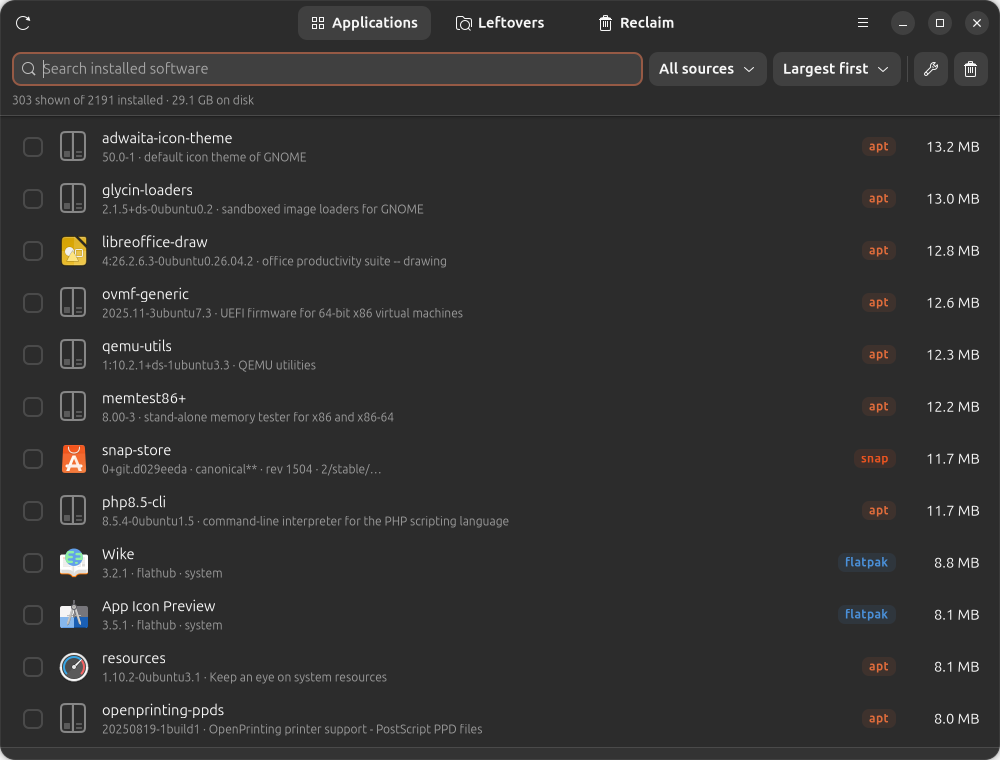

One uninstaller for every way Linux installs software
- apt
- dnf
- pacman
- Flatpak
- Snap
- AppImage
- pip
- pipx
- npm
- cargo
Debian · Fedora · source tarball — GPL-3.0, version 0.1.1

One list
Everything installed, whichever package manager put it there
A Linux machine keeps its software in a dozen places at once, and each one answers a different command. AppSweep asks all of them and puts the answers in a single list you can sort by size.
sources, one window
apt, dnf and pacman for the system; Flatpak, Snap and AppImage for the portable ones; pip, pipx, npm and cargo for the language managers that nothing else tracks.
measured, not estimated
Every row carries the space it really takes on disk, so the largest thing you no longer use is the first thing you see.
with its own icon
Icons come from the desktop entries already on the system, and an ambiguous match is dropped rather than guessed — a wrong logo invites you to remove the wrong thing.
You remove an application… …but this is what it leaves behind. AppSweep finds it, and clears it.
Leftovers
The program goes. Its settings, caches and data stay.
No package manager cleans these up, which is why a machine that has been in use for years carries folders belonging to software removed long ago. AppSweep lists the ones no installed application accounts for, tells you how sure it is about each, and sends what you confirm to the trash.
Because it deletes files
The careful part is where it does nothing
-
Nothing runs unconfirmed
The exact commands appear before anything happens.
-
Protected paths are refused outright
Whether or not they exist. Your document folders are read from user-dirs.dirs, so they are guarded under whatever name your language gives them.
-
A guess is labelled a guess
Matches are marked certain, likely or guess, and a guess is never pre-selected.
-
Still-installed software keeps its own folder
Removing one program never takes another's settings.
-
Leftovers go to the trash
Not to /dev/null. Permanent deletion is a separate choice.
Install
Get AppSweep 0.1.1
Any distribution
source tarball
tar -xzf appsweep-0.1.1.tar.gz
cd appsweep-0.1.1
./install.sh
Download
Needs Python 3.10+, GTK 4.10+ and libadwaita 1.4+. The tarball installs under ~/.local and needs no root. Every release carries SHA256SUMS.